Hudson Soft 發行的橫向卷軸動作遊戲，也是哆啦A夢系列的第一款主機遊戲。玩家操控哆啦A夢，以道具（任意門、竹蜻蜓）對抗各種敵人，最終目標是拯救被抓走的夥伴們。
 ▶ 實機通關影片
▶ 實機通關影片
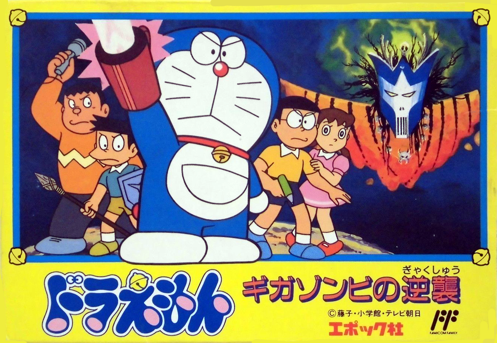
Epoch 發行的 RPG，哆啦A夢系列首度採用回合制戰鬥。玩家操控哆啦A夢和夥伴們，以使用道具代替魔法攻擊，穿越各時代對抗終極反派「吉加殭屍」。劇情有相當完整的世界觀，在當時評價極高。
 ▶ 實機通關影片
▶ 實機通關影片
Game Boy 首款哆啦A夢遊戲，在黑白掌機上重現了哆啦A夢的冒險。關卡設計融合動作與解謎要素，使用不同道具可以解開路上的障礙，是當時掌機遊戲中品質相當出色的作品。
GB 系列第二作，故事背景圍繞一座神秘神殿展開。玩家需收集道具解開謎題，並利用道具特性探索神殿的各個區域。劇情更完整，關卡數量也較首作增加。
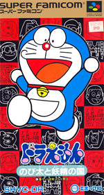
Super Famicom 首款哆啦A夢遊戲，玩家跟隨哆啦A夢與大雄進入精靈居住的神秘國度冒險。豐富的色彩與流暢動畫充分展現 SFC 的 16-bit 圖形表現力，從紅白機的 8-bit 風格大幅躍進。
 ▶ SFC Longplay
▶ SFC Longplay
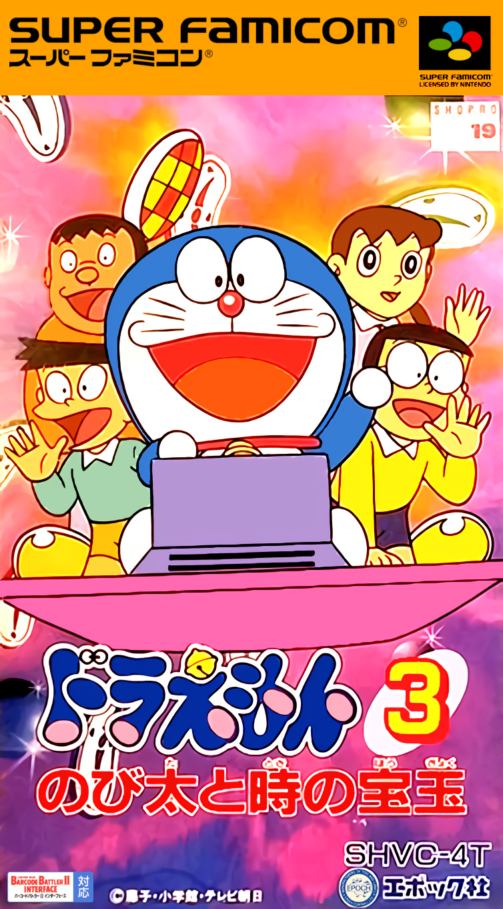
SFC 系列第三作，以傳說中能操控時間的寶珠為核心，哆啦A夢一行人穿越各時代阻止反派奪取時之寶珠。關卡設計更加豐富，在 SFC 系列中以劇情完整性著稱，是公認的 SFC 哆啦A夢系列巔峰之作。
 ▶ SFC Walkthrough
▶ SFC Walkthrough
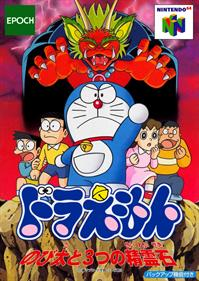
哆啦A夢首款 3D 遊戲，也是系列踏入多邊形時代的重要里程碑。玩家在立體空間中操控哆啦A夢，收集散落各處的三塊神秘精靈石阻止惡魔復活。自由視角的 3D 關卡設計在當時是全新體驗，畫面品質也讓玩家驚艷。
 ▶ N64 Longplay
▶ N64 Longplay
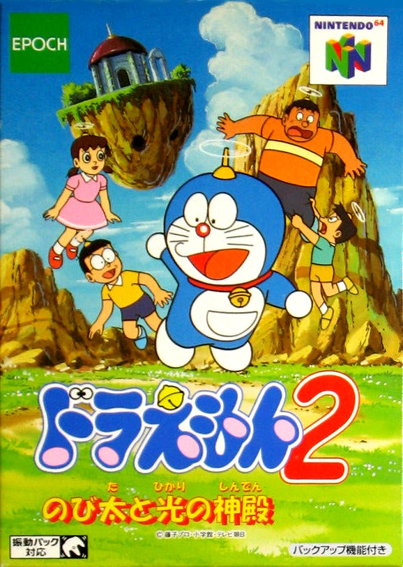
N64 系列第二作，以神秘光之神殿為舞台，哆啦A夢與大雄深入神殿探索古文明遺跡。在前作 3D 基礎上進化，新增更多道具互動機制與謎題設計，畫面細節也有明顯提升，是 N64 三部曲中最受好評的一作。
 ▶ N64 Longplay
▶ N64 Longplay
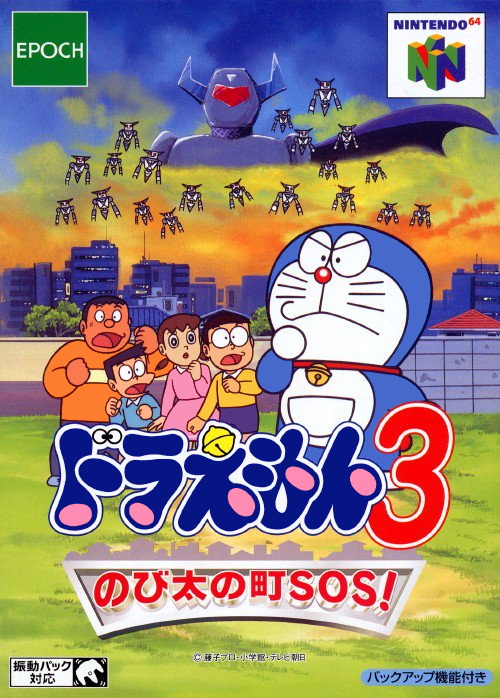
N64 系列完結篇，故事將冒險場景帶回現代城市，大雄所在的小鎮遭受神秘力量威脅，哆啦A夢必須拯救城市居民。以熟悉的街道為 3D 關卡背景，城市探索與道具解謎融合，是對 N64 三部曲的完整總結。
 ▶ N64 Longplay
▶ N64 Longplay
改編自 2006 年重製版電影《大雄的恐龍》，利用 NDS 雙螢幕特性呈現上下場景切換。觸控筆設計讓玩家能直接在下螢幕選擇道具或與場景互動，是哆啦A夢遊戲中最早充分活用 NDS 特殊功能的一作。
 ▶ 實機通關影片
▶ 實機通關影片
改編自 2011 年電影，故事以哆啦A夢系列最具代表性的「鏡面世界」設定為主軸。遊戲特色是可以在「現實世界」與「鏡面世界」兩個平行空間中穿梭解謎，雙螢幕設計完美呼應了電影的雙世界主題。
改編自環保主題的 2008 年電影，大雄與一群植物人在神秘星球上冒險。遊戲中加入了環境解謎元素，玩家需要利用植物生長特性解開關卡，是系列中主題最具特色的作品之一。
 ▶ 實機影片
▶ 實機影片
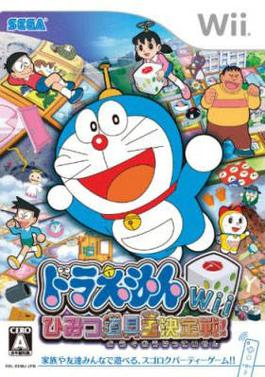
Sega 發行的 Wii 體感派對遊戲，內含 36 款以哆啦A夢道具為主題的小遊戲，最多支援四人同樂。利用 Wii Remote 的體感功能模擬使用道具的動作，例如揮動遙控器射出空氣砲、搖晃模擬竹蜻蜓飛行。
 ▶ 四人實況影片
▶ 四人實況影片
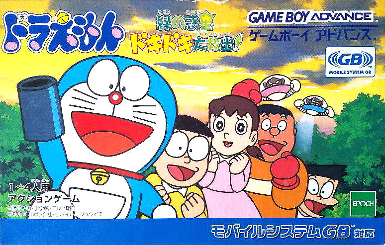
GBA 掌機上的哆啦A夢動作冒險遊戲，故事圍繞一顆被污染的綠色星球展開。玩家操控哆啦A夢及夥伴，使用各種秘密道具清除星球上的威脅，搭救被困的居民。彩色 GBA 畫面讓哆啦A夢的世界比 GB 時代更為鮮豔生動。
 ▶ GBA Longplay
▶ GBA Longplay
改編自 2016 年電影前置作品，3DS 的第一款哆啦A夢遊戲。玩家穿越到史前時代的日本，在原始大地上與史前生物及反派對戰，並使用道具拯救被困的時代鑑定師。立體裸視功能讓遊戲景深更加豐富。
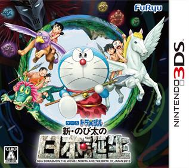
FuRyu 製作，配合 2016 年上映的同名電影推出。玩家與原始時代的孩子們共同保衛部落，利用哆啦A夢的道具建造設施、對抗猛獸。遊戲加入了建設要素，玩家可以為原始部落升級防禦工事，是 3DS 系列中玩法最多元的一作。
 ▶ 實機影片
▶ 實機影片
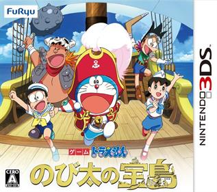
3DS 最後一款哆啦A夢遊戲，改編自 2018 年電影《大雄的寶島》。以加勒比海風格的神秘島嶼為舞台，哆啦A夢與夥伴們乘風破浪尋找傳說中的寶藏。FuRyu 三部 3DS 作品中視覺效果最精緻，劇情也最完整。
 ▶ 實機影片
▶ 實機影片

與《牧場物語》系列正式聯名，大雄與哆啦A夢降落在一個充滿魔法的小鎮，開始農場生活。玩家種植作物、飼養動物、與鎮民交友，並使用哆啦A夢的秘密道具簡化農場作業。故事中有完整的四季循環，節奏溫馨療癒。
 ▶ 實機影片（無解說）
▶ 實機影片（無解說）
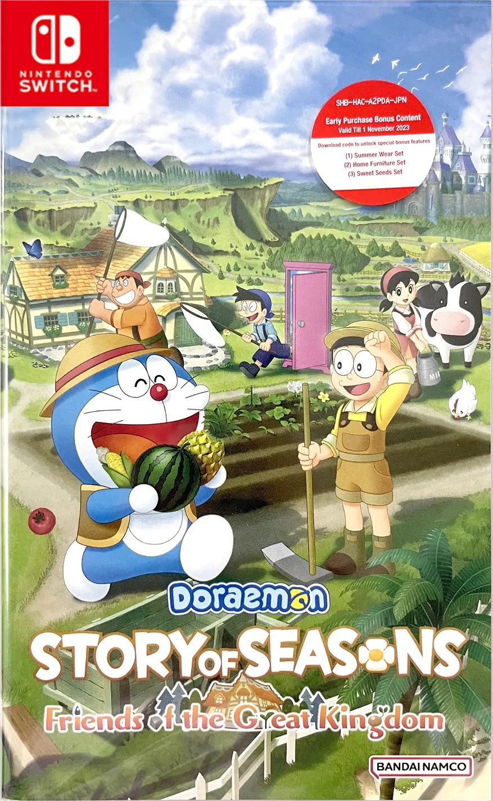
第二款牧場物語聯名作品，在前作成功後全面升級。地圖更廣大，新增更多秘密道具、寵物種類，以及多達數十位來自哆啦A夢世界的角色。「大家的家」功能讓多位角色能加入玩家的農場生活。
 ▶ 實機影片
▶ 實機影片
LINE Games 推出的輕鬆跑酷手機遊戲，玩家操控哆啦A夢奔跑躲避障礙並收集道具。操作簡單，畫面風格完整還原動畫造型，是在亞洲受歡迎的免費手遊。
類似《動物森友會》概念的城鎮建設手遊，玩家在大雄的居住城鎮裡蓋建築、邀請各路哆啦A夢角色入住。使用哆啦A夢道具可以快速完成建設，城鎮風格可以自由客製。